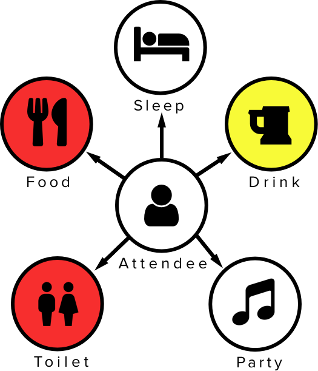
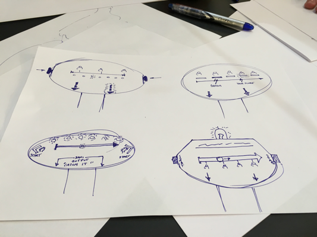
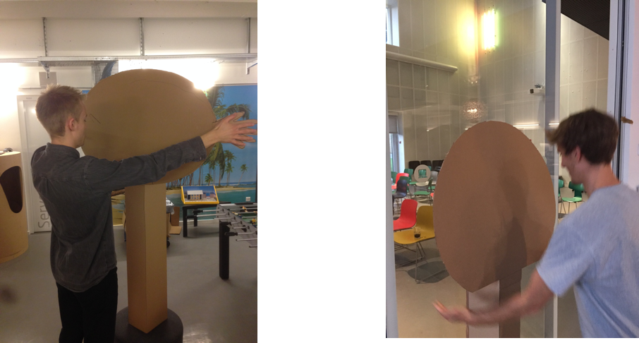
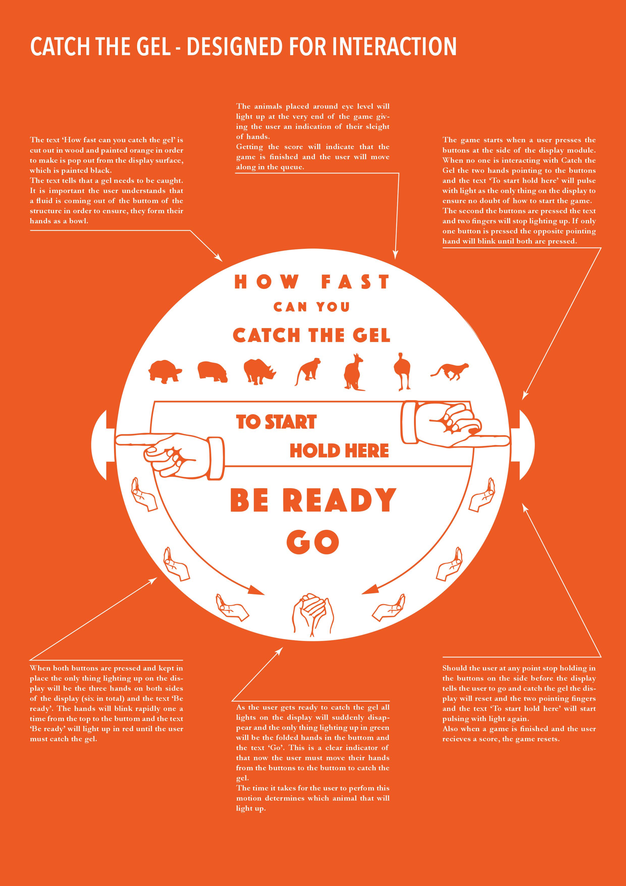
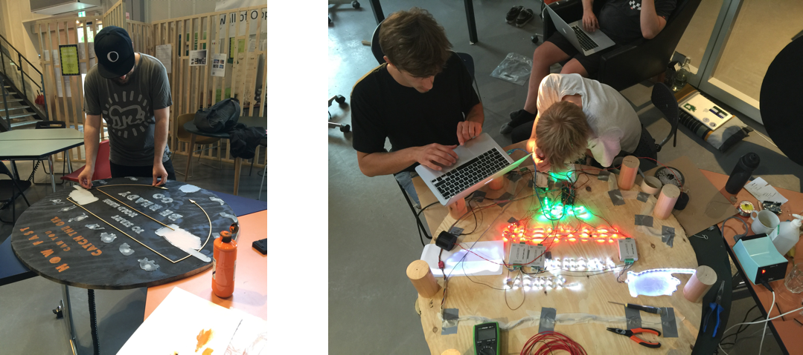
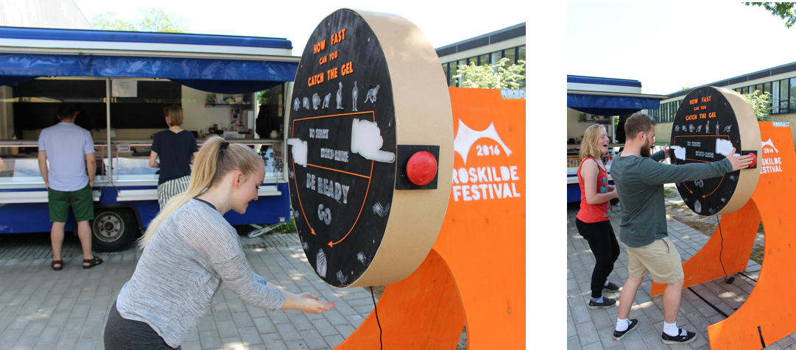

Catch the Gel is a team project, where I shared the responsibilities of the user research, user experience, and interaction design. Our main goal was to provide assistance to Roskilde Festival with a sanitation solution based on the concept of gamification.
UX Researcher
UX Design
Interaction Design
Idea Generation
Let’s Go To A Music Festival
Catch the Gel was a project developed for the course Design for Interaction at DTU. The task required by the professor was to design a gamified solution that corrected any kind of human behavior. The team came up with the idea of choosing Roskilde Festival as our setting with the hope that they would allow us to deploy it there and earn free tickets to the festival.
Discovering The Issues
Once the task and the setting were defined, the team made a study of all the problems we could solve at Roskilde Festival. 4/6ths of the team had attended the festival several times and had a very good idea of what issues were present. The following three came up as the more critical ones:
Trash Sanitation Dehydration
Defining A Topic
The team decided to use the double diamond methodology to take on this project. Starting with the discovery phase were a brainstorm session was conducted that opened up the possibilities. Then we defined and discarded the more unfeasible ideas. After thorough consideration, a decision was made on preventing attendees from getting sick by tackling the sanitation problem.
Understanding the Users
Where To Implement
Once the problem was defined, the team moved into the development phase and the first task was to understand how the festival attendees were getting sick from the lack of sanitation. To figure this out we decided to map out a typical festival experience and point out the risk areas.

Food VS Toilet
The decision to focus on a sanitation solution before eating rather than after going to the toilet came from the problem setup itself. By previously deciding on preventing sickness it was easier to decide where to implement the solution. The reason that attendees get sick is the ingestion of bacteria while eating, coming from dirty hands.
Get Rid Of Those Dirty Hands
Once the decision was made to target the hands of the participants right before they were going to eat. The team started to brainstorm again now in the shape of paper sketches for possible solutions. The winning concept consisted of a game that encouraged the user to move their hands fast enough to catch the (sanitizing) gel. Afterward, it displayed how fast or slow they had been.

Cardboard Prototyping
From paper prototypes, the team passed on to cardboard prototyping. Testing these prototypes helped to defined the overall shape and dimensions of the experience, as well as general game mechanics.

Visual Style
UI Desicions
The game needed to work by itself without any explanation, so the User Interface was quite important it needed to be intuitive and provide all the relevant information to the users.

Wood, Paint, Arduino
Next came the building stage of the project, the team worked together to physically build the whole game. Constructing the wood structure, laser cutting the UI elements and programming the Arduino controllers.

Usability Testing
DTU Street Food
To test the whole system, including how efficient the system will be against traditional non-gamified solutions we conducted the following experiment.
We placed a video camera during lunchtime in front of a Street Food Car at DTU that had a regular sanitizing gel dispenser solution and counted the number of people that used the regular solution.
1/40
Now Catch the Gel
We repeated the same test on the same location at the same time period and saw a substantial increase in the number of persons that used the sanitizing solution.
10/40

Deploying
We Made It To Roskilde
After the successful test of the sanitizing solution, the team was accepted to bring Catch the Gel to the festival and deploy it next to the food area, which we did and it was an amazing experience!